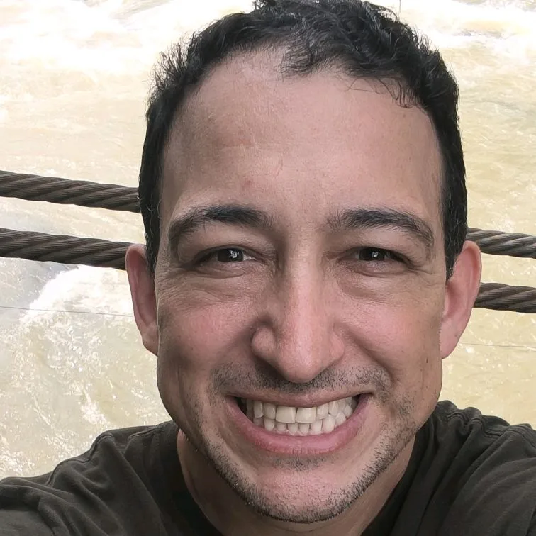

Coroa sobre implante
Repõe um único dente sem mexer nos vizinhos. A coroa fica parafusada ou cimentada sobre o implante.
Cirurgião-dentista · Implantes e próteses
Do primeiro exame à prótese no lugar, cada etapa planejada e explicada com calma. Consultório no Jardim Paraguaçu, Zona Leste de São Paulo.
Do pino ao sorriso
Conversa, exame clínico e de imagem. É aqui que se mede o osso, olha a gengiva e se decide se o caso é para implante e qual prótese faz sentido.
Um pino de titânio é instalado no osso, com anestesia local. Ele faz o papel da raiz do dente que foi perdido.
O osso cresce em volta do titânio e prende o implante. Esse tempo de cicatrização varia de pessoa para pessoa e é acompanhado em consulta.
Com o implante firme, entra o pilar e, sobre ele, a coroa de porcelana na cor e no formato dos dentes vizinhos. Mastigar volta a ser automático.
Um dente que falta muda o jeito de comer, de falar e até de rir na foto. O trabalho aqui é devolver isso com planejamento, sem pressa e explicando cada etapa.
Próteses
Um dente, vários ou a arcada inteira. A escolha depende do osso, da gengiva e de como você quer viver o dia a dia.
Repõe um único dente sem mexer nos vizinhos. A coroa fica parafusada ou cimentada sobre o implante.
Liga dois apoios e preenche o espaço do meio. Pode ser apoiada em dentes ou em implantes.
Uma arcada inteira fixa, presa sobre alguns implantes. Não sai da boca e dispensa adesivo.
Removíveis, para quem perdeu vários ou todos os dentes. Podem ganhar estabilidade com implantes de apoio.
Para o dente que ainda tem raiz, mas perdeu muita estrutura, como depois de um tratamento de canal.
Tratamentos
Implantes e próteses são o foco, mas a família inteira é atendida: do check-up à cirurgia do siso.
Reposição de um ou mais dentes com pinos de titânio, devolvendo função e estética.
Coroas, pontes, protocolos e próteses removíveis, fixas sobre dente ou implante.
Limpeza, restauração e o acompanhamento de rotina que evita problema maior.
Aparelhos fixos, estéticos, autoligáveis e alinhadores.
O tratamento de canal, que cuida da parte de dentro do dente.
Prevenção e tratamento de gengivite e periodontite.
Extrações, incluindo dentes do siso, com diagnóstico e acompanhamento.
Saúde bucal das crianças, do primeiro dente à adolescência.

CRO-SP 173692Quem atende
Cirurgião-dentista com foco em implantes e próteses, atendendo a Zona Leste de São Paulo. No TikTok, explica tratamentos e responde dúvidas de quem tem medo ou vergonha de procurar o dentista.
Dúvidas
A cirurgia é feita com anestesia local. Nos primeiros dias pode haver algum incômodo, que costuma ser controlado com as orientações e a medicação indicadas pelo dentista.
Depende do osso e do caso. Em geral o implante precisa de alguns meses para se integrar ao osso antes da prótese definitiva. O prazo certo sai da avaliação.
A maioria pode, mas é preciso avaliar a saúde geral, a quantidade de osso e a gengiva. Por isso tudo começa com uma consulta de avaliação.
Em muitos casos é possível usar uma prótese provisória durante a cicatrização. Isso é combinado no planejamento.
Muitas vezes sim, com um protocolo ou uma prótese apoiada em implantes. A avaliação mostra se há osso suficiente e qual opção cabe no seu caso.
Sim. A odontopediatria cuida da saúde bucal desde o primeiro dente até a adolescência.
Agendar
Preencha e a mensagem já vai pronta para o WhatsApp do consultório. Nada fica salvo no site.
Prefere ligar ou mandar mensagem? (11) 95654-6924
Onde fica
Pertinho do Jardim Imperador e de São Mateus. Atendimento com hora marcada.